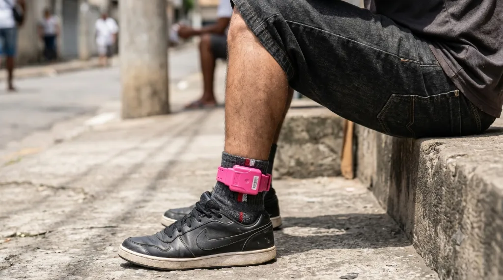

A Manchete Oficial (A Isca)

"Tornozeleira rosa: Projeto de lei busca padronizar monitoramento de acusados de violência contra a mulher"
Falsa Premissa: A imprensa hegemônica e defensores da proposta sugerem que alterar a cor do dispositivo eletrônico de rastreamento é uma resposta dissuasória eficaz contra agressores, quando na verdade estetiza e disfarça a falência penal real.
Mesa de Autópsia: O Texto Original
"Segundo a deputada federal Coronel Fernanda (PL-MT), autora do projeto, as mulheres poderão
identificar quem já sofre uma acusação por este crime, além de
expor o condenado, que seria visto como covarde
Simulação Performática de Exposição: Tenta-se substituir a punição severa de
privação de liberdade por um selo estético no corpo social, presumindo de forma
ingênua que a rotulação visual inibe a reincidência de infratores de alta gravidade.
no ambiente do crime, segundo ela. 'Se a mulher souber que aquela tornozeleira rosa
significa que aquele homem é agressor ou estuprador, ela não vai se aproximar dele.' O
presidente sancionou uma lei que prevê a monitoração eletrônica de agressores como
medida protetiva autônoma
Normalização do Desencarceramento: O uso autônomo do dispositivo eletrônico antes
mesmo da condenação sedimenta a cultura de medidas alternativas, esvaziando a prisão
e enfraquecendo a proteção de urgência real da mulher.
fazendo com que o juiz possa obrigar o uso do equipamento, ainda na
fase inicial da acusação
Precipitação Processual e Apelo Político: Foca-se em ações cosméticas imediatas de
alto impacto mediático, sob a chancela governamental, para dar uma falsa sensação de
atuação do Estado na segurança pública.
O cenário político nacional, sob a ótica da contrainteligência, demonstra
que as investidas ideológicas da Esquerda Neototalitária
frequentemente se utilizam de pautas de gênero para induzir parlamentares da
base de oposição a servirem de vetores involuntários de infiltração. O
protocolo do PL 1811/2026 pela Deputada Federal Coronel Fernanda (PL-MT),
solicitando regime de urgência para a padronização de tornozeleiras
eletrônicas na cor rosa para acusados de violência doméstica, acendeu o
alerta em analistas de contrainteligência: a proposta, mesmo que nascida sob
legítimas e bem-intencionadas motivações protetivas da parlamentar,
comporta-se estruturalmente como um "Cavalo de Troia". Sob o manto de uma
causa moralmente blindada e inatacável — a proteção física da mulher —,
introduz-se no núcleo conservador uma ferramenta de Engenharia
Social Coercitiva desenhada pelo Progressismo
Autoritário para fragmentar o eleitorado de direita e
enfraquecer as garantias constitucionais sob o pretexto de performática
penal.
A manobra legislativa articula-se em torno de uma armadilha tática que
classificamos como o dilema de "Cruz e Espada". Lideranças centrais da
oposição conservadora (como o senador Flávio Bolsonaro) são submetidas a uma
escolha impossível: se validarem a medida, endossam o punitivismo estético e
a humilhação pública do homem comum antes de qualquer julgamento, alienando
sua própria base; se propuserem um debate técnico sobre sua ineficácia, são
sumariamente linchados pela imprensa hegemônica sob o rótulo de "misóginos".
A pressa em pautar o tema nas vésperas de pleitos eleitorais expõe a
verdadeira intenção do estratagema: instrumentalizar conflitos de gênero
para cindir a coesão partidária conservadora, enquanto se consolida o
controle biopolítico disperso do Neototalitarismo.
Essa obsessão legislativa por "performáticas punitivas" cinde a espinha
dorsal do devido processo legal e abre margem para o relativismo da
presunção de inocência. O uso de coloração cromática vexatória em um
dispositivo de rastreamento não cumpre nenhuma função técnica de segurança
pública; atua estritamente como uma marca de execração pública. O
feminismo totalitário, encastelado na burocracia estatal e
amplificado pela mídia de massa, promove a rotulação simbólica do acusado
para habituar a opinião pública a sanções cautelares humilhantes e sumárias,
pavimentando o caminho para a erosão das liberdades individuais fundamentais
do cidadão comum.
A falsidade da pauta protetiva revela-se quando confrontada com a leniência
dispensada pelo sistema judicial a criminosas confessas do sexo feminino em
casos de extrema gravidade. Enquanto se propõe marcar esteticamente o homem
comum no início de investigações preliminares, assassinas e criminosas
confessionais de grande repercussão — como Monique Medeiros e Suzane von
Richthofen — são repetidamente beneficiadas com progressões céleres de
regime, saídas temporárias e humanização editorial pela grande mídia. Em
contrapartida, o peso implacável do aparato estatal recai sobre pais de
família honestos que defendem a educação domiciliar (homeschooling) no
interior do país, ameaçados de perda de guarda por suposta negligência
estatal. Este duplo padrão escancara a assimetria moral de uma agenda
persecutória disfarçada de justiça.
Tecnicamente, a tornozeleira eletrônica é um receptor passivo de coordenadas
de GPS, incapaz de erguer barreiras físicas para conter um agressor
determinado a violar a restrição. A espetacularização da cor rosa atua,
portanto, como um anestésico social: vende-se um teatro punitivo à
sociedade, enquanto o acusado permanece solto no meio urbano e a vítima
desamparada. A verdadeira segurança pública exige o isolamento celular real
em presídios de segurança máxima para os agressores domésticos comprovados.
Aceitar o PL 1811/2026 sem questionar suas bases é ceder espaço à engenharia
ideológica que solapa a técnica jurídica e humilha o cidadão em benefício do
progressismo coercitivo.
Diante da pressão política em ano eleitoral, a oposição conservadora possui
uma saída tática capaz de neutralizar a armadilha de gênero e desmascarar a
agenda do sistema: propor o princípio da isonomia cromática total para a
criminalidade. Se o objetivo do Progressismo Autoritário é a
espetacularização visual do monitoramento para alertar a sociedade sobre o
risco, que se aplique uma escala proporcional para todas as categorias
penais. Por que não propor tornozeleiras diferenciadas para traficantes,
estupradores e pedófilos de alta periculosidade? A recusa sistemática em
rotular esteticamente criminosos hediondos, ao mesmo tempo em que insiste em
expor preventivamente o homem comum em disputas familiares não julgadas,
revela o "dois pesos e duas medidas" e prova que a intenção real é a
perseguição ideológica de gênero, e não a segurança pública.
Em última análise, o PL 1811/2026 é mais uma camada da engenharia
neototalitária que desmoraliza o homem comum e sabota a solidez técnica do
direito brasileiro. É preciso rejeitar o Cavalo de Troia e exigir punições
de verdade para os criminosos, sem ceder às armadilhas eleitorais do
progressismo.
A pauta utiliza a retórica da 'proteção' para introduzir o
punitivismo seletivo e a desmoralização estética do acusado. Ao
forçar uma pauta de gênero em ano eleitoral, o projeto atua como um
cavalo de troia que força a liderança do partido a escolher entre
dois lados de uma armadilha montada pela militância.
Para fins de transparência documental e auditoria editorial, a matéria que
detalha as justificativas da deputada e o trâmite legislativo associado ao
monitoramento estético pode ser lida na íntegra no portal de notícias O Globo Brasil
🔗.
A Armadilha do Cavalo de Troia: O PL 1811/2026 e a Divisão da Base Conservadora
Modus Operandi Identificado:
Arma Intelectual (Copiar para WhatsApp):

O Mentor: Jander Nunes
Jander Nunes é analista estratégico de comunicação, com mais de quinze anos de atuação nos bastidores da imprensa e no estudo da influência geopolítica sobre a opinião pública. Tendo testemunhado a infiltração progressista nas principais redações e a deformação da ética jornalística, assumiu a missão de fundar o portal Voz Direita. Seu propósito é traduzir a complexidade da guerra cultural em diretrizes táticas acessíveis, capacitando o cidadão de direita a identificar a engenharia social e a defender de forma fundamentada as bases morais e as liberdades civis que sustentam o nosso futuro comum.